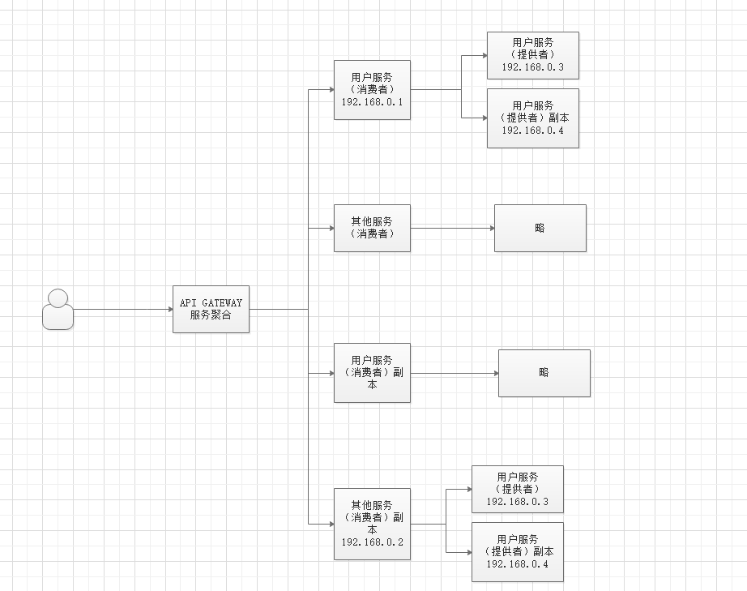
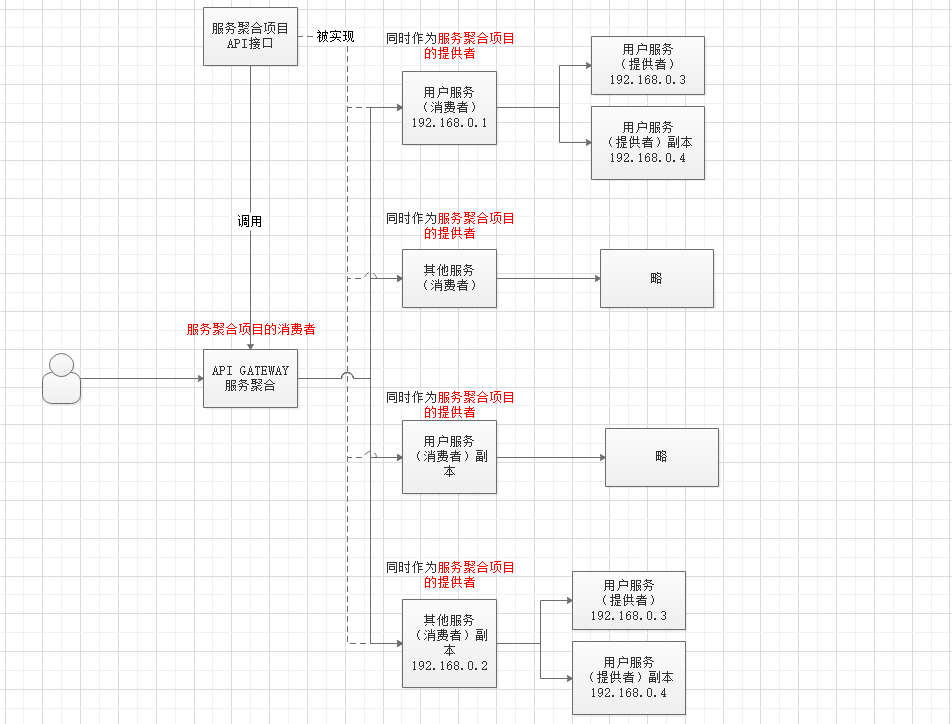
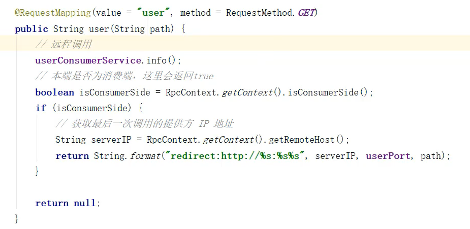

前言
近年来，微服务在应用开发和部署方面取得了显著的进步。将应用开发或者重构成微服务以分离服务，通过 API 以明确的方式来相互“对话” 。例如，每个微服务都是自包含（self-contained），各自维护自己的数据存储（这非常有意义），可以独立更新其他服务。
微服务
概念
把一个大型的单个应用程序和服务拆分为数个甚至数十个的支持微服务，它可扩展单个组件而不是整个的应用程序堆栈，从而满足服务等级协议。
定义
围绕业务领域组件来创建应用，这些应用可独立地进行开发、管理和迭代。在分散的组件中使用云架构和平台式部署、管理和服务功能，使产品交付变得更加简单。
本质
用一些功能比较明确、业务比较精练的服务去解决更大、更实际的问题。
PS： 微服务这个概念是 2012 年出现的，作为加快 Web 和移动应用程序开发进程的一种方法，2014 年开始受到各方的关注，同年为微服务的元年；
微服务实践
要实际的应用微服务，需要解决以下问题：
- 客户端如何访问这些服务
- 每个服务之间如何通信
- 如此多的服务，如何实现？
- 服务挂了，如何解决？（备份方案，应急处理机制）
Dubbo
概述
Apache Dubbo (incubating) |ˈdʌbəʊ| 是一款高性能、轻量级的开源 Java RPC 分布式服务框架，它提供了三大核心能力：面向接口的远程方法调用，智能容错和负载均衡，以及服务自动注册和发现。她最大的特点是按照分层的方式来架构，使用这种方式可以使各个层之间解耦合（或者最大限度地松耦合）。从服务模型的角度来看，Dubbo 采用的是一种非常简单的模型，要么是提供方提供服务，要么是消费方消费服务，所以基于这一点可以抽象出服务提供方（Provider）和服务消费方（Consumer）两个角色。
架构

节点角色说明
| 节点 | 角色说明 |
|---|---|
Provider |
暴露服务的服务提供方 |
Consumer |
调用远程服务的服务消费方 |
Registry |
服务注册与发现的注册中心 |
Monitor |
统计服务的调用次数和调用时间的监控中心 |
Container |
服务运行容器 |
调用关系说明
- 服务容器负责启动，加载，运行服务提供者。
- 服务提供者在启动时，向注册中心注册自己提供的服务。
- 服务消费者在启动时，向注册中心订阅自己所需的服务。
- 注册中心返回服务提供者地址列表给消费者，如果有变更，注册中心将基于长连接推送变更数据给消费者。
- 服务消费者，从提供者地址列表中，基于软负载均衡算法，选一台提供者进行调用，如果调用失败，再选另一台调用。
- 服务消费者和提供者，在内存中累计调用次数和调用时间，定时每分钟发送一次统计数据到监控中心
示例
启动时检查
Dubbo 缺省会在启动时检查依赖的服务是否可用，不可用时会抛出异常，阻止 Spring 初始化完成，以便上线时，能及早发现问题，默认 check="true"。
可以通过 check="false" 关闭检查，比如，测试时，有些服务不关心，或者出现了循环依赖，必须有一方先启动。
另外，如果你的 Spring 容器是懒加载的，或者通过 API 编程延迟引用服务，请关闭 check，否则服务临时不可用时，会抛出异常，拿到 null 引用，如果 check="false"，总是会返回引用，当服务恢复时，能自动连上。
通过配置文件配置
1 | dubbo: |
含义
dubbo.reference.check=false，强制改变所有 reference 的 check 值，就算配置中有声明，也会被覆盖。
dubbo.consumer.check=false，是设置 check 的缺省值，如果配置中有显式的声明，如：``，不会受影响。
dubbo.registry.check=false，前面两个都是指订阅成功，但提供者列表是否为空是否报错，如果注册订阅失败时，也允许启动，需使用此选项，将在后台定时重试。
负载均衡
在集群负载均衡时，Dubbo 提供了多种均衡策略，缺省为 random 随机调用。
可以自行扩展负载均衡策略，参见：负载均衡扩展
负载均衡策略
Random LoadBalance
- 随机，按权重设置随机概率。
- 在一个截面上碰撞的概率高，但调用量越大分布越均匀，而且按概率使用权重后也比较均匀，有利于动态调整提供者权重。
RoundRobin LoadBalance
- 轮询，按公约后的权重设置轮询比率。
- 存在慢的提供者累积请求的问题，比如：第二台机器很慢，但没挂，当请求调到第二台时就卡在那，久而久之，所有请求都卡在调到第二台上。
LeastActive LoadBalance
- 最少活跃调用数，相同活跃数的随机，活跃数指调用前后计数差。
- 使慢的提供者收到更少请求，因为越慢的提供者的调用前后计数差会越大。
ConsistentHash LoadBalance
- 一致性 Hash，相同参数的请求总是发到同一提供者。
- 当某一台提供者挂时，原本发往该提供者的请求，基于虚拟节点，平摊到其它提供者，不会引起剧烈变动。
- 算法参见：http://en.wikipedia.org/wiki/Consistent_hashing
- 缺省只对第一个参数 Hash，如果要修改，请配置 ``
- 缺省用 160 份虚拟节点，如果要修改，请配置 ``
配置
服务端Provider
1 | dubbo: |
客户端Consumer
1 | dubbo: |
Dubbo + Kryo实现高速序列化
Dubbo RPC 是 Dubbo 体系中最核心的一种高性能、高吞吐量的远程调用方式，可以称之为多路复用的 TCP 长连接调用：
- 长连接：避免了每次调用新建 TCP 连接，提高了调用的响应速度
- 多路复用：单个 TCP 连接可交替传输多个请求和响应的消息，降低了连接的等待闲置时间，从而减少了同样并发数下的网络连接数，提高了系统吞吐量
Dubbo RPC 主要用于两个 Dubbo 系统之间的远程调用，特别适合高并发、小数据的互联网场景。而序列化对于远程调用的响应速度、吞吐量、网络带宽消耗等同样也起着至关重要的作用，是我们提升分布式系统性能的最关键因素之一。
Dubbo 中支持的序列化方式：
- dubbo 序列化：阿里尚未开发成熟的高效 java 序列化实现，阿里不建议在生产环境使用它
- hessian2 序列化：hessian 是一种跨语言的高效二进制序列化方式。但这里实际不是原生的 hessian2 序列化，而是阿里修改过的 hessian lite，它是 dubbo RPC 默认启用的序列化方式
- json 序列化：目前有两种实现，一种是采用的阿里的 fastjson 库，另一种是采用 dubbo 中自己实现的简单 json 库，但其实现都不是特别成熟，而且 json 这种文本序列化性能一般不如上面两种二进制序列化。
- java 序列化：主要是采用 JDK 自带的 Java 序列化实现，性能很不理想。
在通常情况下，这四种主要序列化方式的性能从上到下依次递减。对于 dubbo RPC 这种追求高性能的远程调用方式来说，实际上只有 1、2 两种高效序列化方式比较般配，而第 1 个 dubbo 序列化由于还不成熟，所以实际只剩下 2 可用，所以 dubbo RPC 默认采用 hessian2 序列化。
但 hessian 是一个比较老的序列化实现了，而且它是跨语言的，所以不是单独针对 Java 进行优化的。而 dubbo RPC 实际上完全是一种 Java to Java 的远程调用，其实没有必要采用跨语言的序列化方式（当然肯定也不排斥跨语言的序列化）。
最近几年，各种新的高效序列化方式层出不穷，不断刷新序列化性能的上限，最典型的包括：
- 专门针对 Java 语言的：Kryo，FST 等等
- 跨语言的：Protostuff，ProtoBuf，Thrift，Avro，MsgPack 等等
这些序列化方式的性能多数都显著优于 hessian2（甚至包括尚未成熟的 dubbo 序列化）
有鉴于此，我们为 dubbo 引入 Kryo 和 FST 这两种高效 Java 序列化实现，来逐步取代 hessian2。
其中，Kryo 是一种非常成熟的序列化实现，已经在 Twitter、Groupon、Yahoo 以及多个著名开源项目（如 Hive、Storm）中广泛的使用。而 FST 是一种较新的序列化实现，目前还缺乏足够多的成熟使用案例。
在面向生产环境的应用中，目前更优先选择 Kryo。
在线运维命令-QOS
dubbo 2.5.8 新版本增加了 QOS 模块，提供了新的 telnet 命令支持。
端口
新版本的 telnet 端口 与 dubbo 协议的端口是不同的端口，默认为 22222，可通过配置文件dubbo.yml 修改:
1 | dubbo: |
或者通过设置 JVM 参数:
1 | -Ddubbo.application.qos.port=33333 |
安全
默认情况下，dubbo 接收任何主机发起的命令，可通过配置文件dubbo.yml 修改:
1 | dubbo: |
或者通过设置 JVM 参数:
1 | -Ddubbo.application.qos.accept.foreign.ip=false |
拒绝远端主机发出的命令，只允许服务本机执行
telnet 与 http 协议
telnet 模块现在同时支持 http 协议和 telnet 协议，方便各种情况的使用
示例如下：
1 | ➜ ~ telnet localhost 22222 |
命令
ls 列出消费者和提供者
1 | dubbo>ls |
列出 dubbo 的所提供的服务和消费的服务，以及消费的服务地址数
Online 上线服务命令
当使用延迟发布功能的时候(通过设置 org.apache.dubbo.config.AbstractServiceConfig#register 为 false)，后续需要上线的时候，可通过 Online 命令
1 | //上线所有服务 |
常见使用场景：
- 当线上的 QPS 比较高的时候，当刚重启机器的时候，由于没有进行JIT 预热或相关资源没有预热，可能会导致大量超时，这个时候，可通过分批发布服务，逐渐加大流量
- 当由于某台机器由于某种原因，需要下线服务，然后又需要重新上线服务
Offline 下线服务命令
由于故障等原因，需要临时下线服务保持现场，可以使用 Offline 下线命令。
1 | //下线所有服务 |
help 命令
1 | //列出所有命令 |
相关参数说明
QoS提供了一些启动参数，来对启动进行配置，他们主要包括：
| 参数 | 说明 | 默认值 |
|---|---|---|
| qosEnable | 是否启动QoS | true |
| qosPort | 启动QoS绑定的端口 | 22222 |
| qosAcceptForeignIp | 是否允许远程访问 | false |
注意，从2.6.4/2.7.0开始，qosAcceptForeignIp默认配置改为false，如果qosAcceptForeignIp设置为true，有可能带来安全风险，请仔细评估后再打开。
QoS参数可以通过如下方式进行配置：
- 系统属性
- dubbo.properties
- XML方式
- Spring-boot自动装配方式
Spring-boot自动装配方式
如果是spring-boot的应用，可以在application.properties或者application.yml上配置:
1 | dubbo: |
Dubbo如何解决微服务的四大问题
客户端如何访问这些服务
API GATEWAY/服务聚合服务，怎么叫都可以
Why
在微服务架构中，每个服务都会存在消费者和提供者，我们调用这些服务时可以通过ip:port来调用，但是这样写的很死，而且每个服务要是有多个副本时，我们也很难做。也不可能让用户手动输入ip:port来调用，所以这时需要一个服务聚合服务/API GATEWAY来管理这些服务，用户访问此服务，此服务调用所有其他的服务，做到用户无感知。

How
API GATEWAY作为一个服务聚合服务，肯定是服务调用者，我们同时需要服务聚合服务的接口项目、提供者。其中服务聚合服务的提供者是所有服务的消费者。听着很费劲，请看下图。
在服务聚合API接口中写一个方法，在每个服务的消费者中实现它（空方体体即可），然后在服务聚合服务消费者中写每个服务的跳转方法。比如说，用户服务的跳转方法：先调用用户服务消费者实现的服务聚合API接口的实现方法，然后通过Dubbo提供的接口获得本次用户服务的IP地址，配合固定的端口，即可完成API GATEWAY的实现。


为什么跳转方法需要调用服务聚合提供者的API
因为每个服务都是服务聚合提供者，如果你想跳转到用户服务（消费者），就要先调用用户服务（消费者）实现的服务聚合方法，通过dubbo调用（默认负载均衡）获取它的IP，因为传递性，我们获取到的IP也是负载均衡的，然后跳转到用户服务的特定接口。
为什么需要指定端口，这和写死有什么区别
默认下每个服务都需要一个端口，一般相同的服务都会用一个端口，并且部署在不同的服务器上，所以这样没有什么影响
每个服务之间如何通信
Dubbo本身就是RPC通信框架，它自身解决了这个问题，服务间通过RPC调用。
对内RPC，对外HTTP。
如此多的服务，如何实现
这种方案Dubbo使用Zookeeper，通过Zookeeper的服务注册与发现功能来实现鼓舞管理，Dubbo使用Zookeeper来管理服务。
服务挂了，如何解决
Dubbo没有此功能，通过Spring Cloud Netflix Hystrix熔断器来实现服务熔断。
当提供者抛出异常/执行开始，但没有在允许的时间内完成时触发熔断机制。